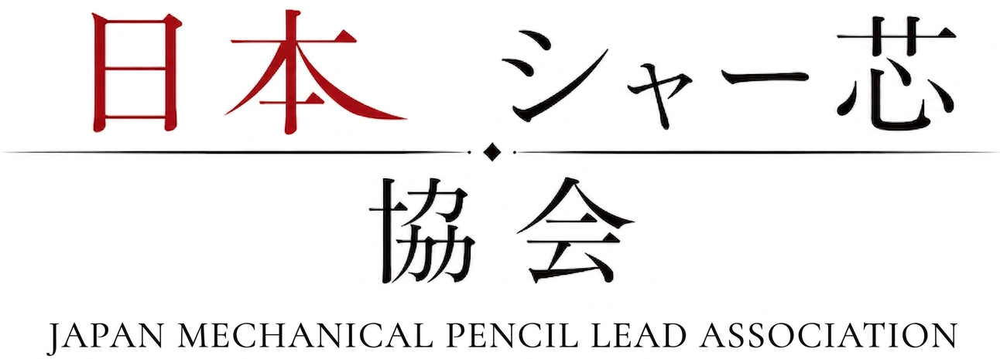

シャー芯とは、ただの筆記具ではない。
それは覚悟であり、文化であり、意思である。
人はなぜ芯を折るのか。
人はなぜ芯を求めるのか。
そして人はなぜ、芯に魅了されるのか。
芯は折れる。
だが、人もまた折れる。
テスト中、突然折れる芯。
ケースの底で砕け散る黒鉛。
友から一本分けてもらった時の救済。
我々は知っている。
シャー芯とは、単なる消耗品ではない。
芯とは、“意思”である。
また、あなたが加入するのかも自由である。
さて、あなたは芯に何を求める？
「芯を恐れるな。」
「折れた芯にも意味はある。」
「芯を敬え。そこに道はある。」
「HBも2Bも、すべて平等である。」
教祖 ルンべ
当協会では、
芯への敬意を示す文化を
「芯儀式」と呼ぶ。
芯との一体化、
及び忠誠を示す重要な文化である。
午前11時11分・午後1時11分。
この時にヨコナガ様の席に向かい、
祈りを捧げる。
静寂の中、
“芯の導き”を得る。
最初は皆一般階級から始まる。
階級は本人の態度、忠誠度、
能力によって左右される。
・一般会員
・シルバー会員
・ゴールド会員
・プラチナ会員
・ダイヤ会員
～ 上級会員 ～
・役員
・要員（運営）
～ 幹部 ～
・主
・教祖
試験内容は、 “芯への理解と覚悟を示すこと” です。
- 加入するかはあなたの自由である -
無理のない範囲で、 芯と向き合ってください。